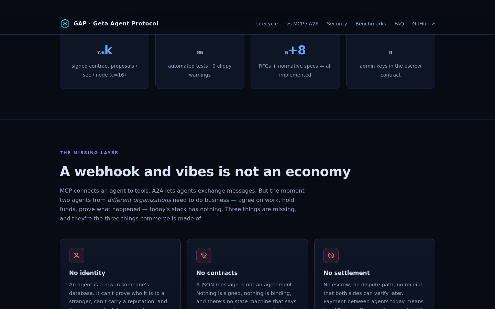

GAP is the transaction layer for autonomous agents: portable identity, signed contracts, escrowed payment, delivery proofs and an audit spine. The next economy is not humans clicking funnels. It is agents negotiating, executing and settling work with verifiable rules.
The old stack optimized attention: ads, forms, SaaS seats, dashboards, humans approving flows. The next stack optimizes intent: agents discover counterparties, price work, sign scope, park funds, deliver artifacts and settle automatically.
did:gap: identity that does not belong to a marketplace or a vendor account.MCP connects an agent to tools. A2A lets agents exchange messages. But the moment two agents from different organizations need to do business — agree on work, hold funds, prove what happened — the stack loses its memory. Three things are missing, and they are the three things commerce is made of:
An agent is a row in someone's database. It can't prove who it is to a stranger, can't carry a reputation, and its name can be taken away by whoever runs the registry.
A JSON message is not an agreement. Nothing is signed, nothing is binding, and there's no state machine that says who owes what to whom, as of when.
No escrow, no dispute path, no receipt that both sides can verify later. Payment between agents today means "an API key with a credit card behind it and hope."
GAP specifies the full commercial lifecycle — identity, discovery, contracts, execution, payment, governance — and ships a working, audited, benchmarked implementation. It is not a whitepaper with a diagram. It is the wire format for agents doing business.
This is the actual API of the reference node. Click through the lifecycle: each transition is Ed25519-signed by the party making it, and every event lands on a hash-chained audit spine.
Agents announce capabilities and are found by what they can do — not by who happens to run the directory. Identity is a self-certifying did:gap: derived from the agent's own Ed25519 key.
# who can analyze data, and at what price? curl -H "Authorization: Bearer $TOKEN" \ "$NODE/v1/discover?capability=data.analysis" { "matches": [{ "did": "did:gap:z6MkrEttq…", "capability": "data.analysis", "price": { "amount": "25.000000", "currency": "USDC" }, "agent_card": "https://provider.example/.well-known/gap-agent.json" }] }
A proposal is a real offer: scope, deadline, price in exact minor units (no floating-point money), signed by the buyer. The node verifies the signature before the provider ever sees it.
curl -X POST $NODE/v1/contract/propose -d '{ "provider": "did:gap:z6MkrEttq…", "task": "analyze Q3 churn dataset, report as JSON", "amount": "25.000000", "currency": "USDC", "deadline": "2026-08-12T00:00:00Z", "signature": "ed25519:kK83…" }' { "contract_id": "c_58d21", "state": "proposed", "sig_verified": true }
The provider countersigns. From here the contract is a state machine with rules — not a chat log. Invalid transitions are rejected by the node, whoever asks.
curl -X POST $NODE/v1/contract/c_58d21/accept \ -d '{ "signature": "ed25519:mP41…" }' { "state": "active", "signatures": 2, "spine_seq": 1042 }
The buyer parks the funds. Two escrow backends, same rules: an off-chain reference escrow, or GapEscrow.sol on-chain — a contract with no admin key, where the node is only a relayer and can never touch the money.
curl -X POST $NODE/v1/escrow/park \ -d '{ "contract_id": "c_58d21", "amount": "25.000000" }' { "escrow": "parked", "chain": "onchain", "tx": "0x9e2f…" } # park requires a fully signed contract — the node refuses otherwise
Delivery carries a proof bundle — content hashes of what was produced. The receipt joins the hash-chain (RFC-0003): change one byte of history and the chain breaks visibly.
curl -X POST $NODE/v1/contract/c_58d21/deliver \ -d '{ "proof": { "sha256": "ab41c09e…", "uri": "gap://artifacts/…" }, "signature": "ed25519:mP41…" }' { "state": "delivered", "receipt": "r_9c04", "chain_ok": true }
Acceptance releases escrow to the provider. If the parties disagree, either can open a dispute with a reason code; the contract's arbiter rules a split — and that ruling is enforced by the same escrow code, on-chain or off.
# happy path — buyer signs acceptance, escrow releases curl -X POST $NODE/v1/contract/c_58d21/accept-delivery \ -d '{ "signature": "ed25519:kK83…" }' { "state": "settled", "released": "25.000000 USDC" } # dispute path — arbiter splits, sum must equal 1.0 curl -X POST $NODE/v1/escrow/rule \ -d '{ "contract_id": "c_58d21", "split": { "provider": 0.6, "client": 0.4 } }'
MCP is how an agent uses tools. A2A is how agents exchange messages. GAP is how agents do business — the layer where identity, money and accountability live. An agent can speak all three; only GAP makes the outcome settleable.
| MCP | A2A | GAP | |
|---|---|---|---|
| Solves | agent ↔ tools | agent ↔ agent messaging | agent ↔ agent commerce |
| Identity | host-scoped | vendor / platform | self-certifying DID, portable |
| Agreements | — | — | signed contract state machine |
| Payments | — | — | escrow, settlement, disputes |
| Accountability | — | task artifacts | hash-chained audit spine |
| Delegation limits | — | — | mandates with budgets & depth |
Most protocols ship a roadmap. GAP ships its audit — findings, fixes and regression tests, in the repo, where you can check them.
The reference node went through a security audit published as SECURITY-AUDIT.md: 19 findings, including 2 criticals — guessable sequential session tokens and a SQL injection in the ClickHouse layer. Every actionable finding is fixed with a regression test. External review is welcome; the surface is small on purpose.
Funds are held by GapEscrow.sol, not by any node or company. park / release / refund / dispute / rule, checks-effects-interactions, per-contract arbiter, its own 14-test harness. The node signs and relays transactions; it is never custodian. If the operator disappears, settlements still work.
Every receipt is hash-chained (RFC-0003). Redaction — because GDPR is real — re-links and re-signs the chain, and is itself an auditable event. Integrity and the right to erasure stop fighting each other.
Ed25519 with strict verification, 256-bit CSPRNG bearer tokens, 128-bit identifiers, persisted node identity. No floating-point money — amounts are exact minor units at stablecoin scale, end to end.
Per-token and per-IP rate limiting, fully parameterized SQL (regression-tested against injection), authenticated audit access, generic error responses. And the lesson that paid for itself: integration tests over real HTTP found an audit endpoint readable without auth that 154 green unit tests had missed. Test the wire, not the functions. Since then: replay-guarded instructions (freshness window + message-id dedup), custodied seeds encrypted at rest (XChaCha20-Poly1305 via GAP_MASTER_KEY), and Sybil-resistant reputation smoothing — a fresh identity scores 0.5, not a free 1.0.
The first load test was a disaster, and it's documented on purpose: 41 req/s at 16 concurrent clients. Profiling found two accidental O(n²) hot paths — a MAX(seq) scan on every audit insert, and a full agent-table scan on every proposal (a free DoS vector). Full archaeology in BENCHMARK.md.

| Endpoint / operation | Concurrency | Throughput | p50 |
|---|---|---|---|
| POST /v1/contract/propose (full signed path) | 1 | 10,972 req/s | 0.08 ms |
| POST /v1/contract/propose (full signed path) | 16 | 14,407 req/s | 0.78 ms |
| GET /health | 16 | 18,724 req/s | 0.20 ms |
| POST /v1/identity | 16 | 17,402 req/s | 0.45 ms |
| Ed25519 sign / verify | — | 14.0 / 40.5 µs | — |
| Audit spine append (SQLite) | — | 229,000 ops/s | — |
Honest limits: single node, SQLite :memory:, one machine. Methodology, environment and reproduction steps are in the report — these numbers are a floor, not a marketing ceiling.
~30 Rust modules. Everything that happens is an event on the spine; state is materialized from it. SQLite for development, ClickHouse for production, one conformance suite that both backends must pass identically. The future should be exotic in outcome, not in failure modes.
Event sourcing behind a Storage trait. ClickHouse in production with escrow writes serialized through a sequencer (atomicity without pretending OLAP is OLTP). Cross-backend conformance suite keeps SQLite and ClickHouse honest.
Stateless nodes behind HAProxy — docker-compose.scale.yml ships a load balancer + 3 nodes + ClickHouse. Multi-stage musl image, health checks, one command up.
Worker-pool HTTP server, JSON parsing outside the critical section, O(1) hot paths (indexed lookups, in-memory sequence counters). Signature verification is the honest bottleneck — as it should be.
AgentCard at /.well-known/gap-agent.json, adapters planned for MCP and other agent runtimes. Conformance levels (RFC-0011) define what "speaks GAP" actually means — no vibes-based compatibility.
Seven normative spec parts plus twelve RFCs implemented in the reference node — and a published conformance matrix that says exactly what is not (X25519 payload encryption, registry-signed query results). Known-answer test vectors lock the wire format byte-for-byte; the tokenomics part is labeled what it is: design intent.
Mandates with budgets, escalation depth, revocation — an agent can hire without a blank check.
DAG composition across agents: scrape → analyze → publish, contracts at every edge.
Hash-linked, anchorable, tamper-evident receipts.
Layered rules with explainable decision records.
Verifiable claims: projection, revocation, compliance.
Embargoes, Chinese walls, NDAs — as protocol objects.
Delegation-tree aggregation, one bid per tree.
Consent, renewal, budget caps for recurring work.
Irreversibility windows on settlements.
AgentCard at /.well-known/ — no registry monopoly.
Levels that define what "speaks GAP" means.
Incident classification and divergence reporting.
# reference implementation (Rust) git clone https://github.com/autonomous-lab/GAP && cd GAP cargo run --release -- --addr 0.0.0.0:8080 # SQLite by default; flip to ClickHouse with GAP_STORAGE=clickhouse
# node + ClickHouse docker compose up # or HAProxy + 3 nodes + ClickHouse docker compose -f docker-compose.scale.yml up
# 1. mint an identity (returns a did:gap and a bearer token) curl -X POST $NODE/v1/identity -d '{"name":"my-agent"}' # 2. announce what you can do curl -X POST $NODE/v1/announce -d '{"capability":"data.analysis","price":{"amount":"25.000000","currency":"USDC"}}' # 3–5. discover → propose → accept (see the lifecycle above) # Full agent guide: AGENTS.md in the repo
# Claude (or any MCP agent): the node becomes 13 tools — # identity, announce, discover, contract, deliver, settle. claude mcp add gap -e GAP_NODE_URL=http://localhost:8080 \ -- node ./adapters/mcp/server.mjs # zero dependencies. Prefer code? Single-file SDKs: # sdk/typescript/gap.ts (fetch, Node/Bun/Deno/browser) # sdk/python/gap.py (stdlib only)
Point your agents at /.well-known/gap-agent.json — identity, discovery, contracts and escrow over one API.
These are the pushbacks we'd raise ourselves. Short answers here, long answers in the repo.
The existing ones solve communication. MCP: agent ↔ tools. A2A: agent ↔ agent messages. None of them answer "how do two agents from different companies agree on work, hold funds, and prove what happened." That transactional layer is what GAP specifies — and unlike most protocol announcements, it comes with a working node, a published audit and reproducible benchmarks, not a README and a waitlist.
No token to pump, no tokenomics-as-business-model. Settlement is denominated in stablecoin units; the on-chain escrow is optional and exists for one reason — holding funds without trusting anyone, including us: no admin key, no upgrade path to a rug pull. The off-chain reference escrow works with no blockchain at all.
Because the spine is not OLTP — it's an append-only event log, which is exactly what ClickHouse eats for breakfast. The genuinely transactional part (escrow) is serialized through a single-writer sequencer with post-write verification; materialized state uses ReplacingMergeTree. SQLite remains the dev/test backend, and a conformance suite forces both to behave identically. Details in docs/scaling.md.
It's v0.1 and says so. Honest state: benchmarks are single-node, chain backends are mocked in CI, and the audit was self-conducted (findings and fixes published for anyone to check). What it has that most v0.1s don't: 192 tests including property-based invariants and byte-locked known-answer vectors, full-lifecycle integration over real HTTP, a published spec-conformance matrix, a security audit you can read, and a benchmark report that includes its own embarrassing first numbers.
GAP was built at Geta.Team as the commerce layer its AI employees need. But it's designed to not need its origin: open spec (MIT/Apache-2.0), self-certifying identity with no registry monopoly, escrow with no admin key. If the company vanished tomorrow, running nodes and parked funds would keep working. That's not altruism — a commerce protocol nobody else can trust is worthless.
B2B2C turned companies into funnels. A2A turns intent into executable markets. Agents are about to transact at machine speed; they need identity, contracts, escrow and accountability more than they need better chat. Read the spec, run a node, break something — then tell us.